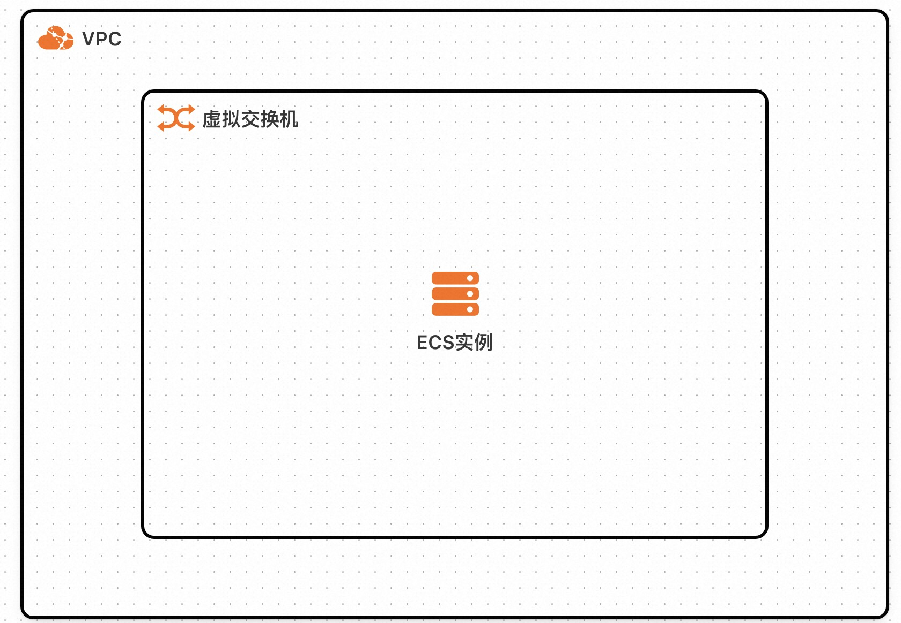

Rapid deployment of Dameng Database DM8 Community Edition by Computing Nest
*Disclaimer * : This service is provided by a third party, and we strive to ensure its security, accuracy, and reliability. However, we cannot guarantee that it is completely free from malfunctions, interruptions, errors, or attacks. Therefore, the company hereby declares that it makes no representations, warranties, or commitments regarding the content, accuracy, completeness, reliability, applicability, or timeliness of this service, and shall not be liable for any direct or indirect losses or damages arising from your use of this service; We assume no responsibility for the content, accuracy, completeness, reliability, applicability, or timeliness of third-party websites, applications, products, and services that you access through this service. You shall be solely responsible for the risks and liabilities arising from the consequences of your use; We shall not be liable for any losses or damages arising from your use of this service, including but not limited to direct losses, indirect losses, loss of profits, loss of goodwill, loss of data, or other economic losses, even if we have been informed in advance of the possibility of such losses or damages; We reserve the right to modify this statement from time to time, so please check this statement regularly before using this service. If you have any questions or concerns about this statement or service, please contact us.
Overview
A large-scale general-purpose relational database that is 100% independently developed, with ultimate compatibility, high availability, high reliability, and high security. It is a database product that solves the bottleneck pain points in China's basic software field. Currently, it has helped 50+key industries achieve core system upgrades.
Product official website address: Dameng Database Management System DM8
Preconditions
Deploying the DM8 Community Edition service instance of Dameng Database requires accessing and creating some Alibaba Cloud resources. Therefore, your account needs to have access to the following resources: (This permission needs to be added only when your account is a RAM account)
| Permission Policy Name | Remarks |
|---|---|
| AliyunECFullAccess | Manage permissions for Cloud Server Services (ECS) |
| AliyunVPCFullAccess | Manage VPC permissions |
| AliyunRosFullAccess | Manage permissions for Resource Organization Services (ROS) |
| AliyunComputerNestUserFullAccess | Manage user side permissions for Compute Nest service |
Billing Instructions
The cost of deploying Dameng Database DM8 Community Edition in the computing nest mainly involves:
- Selected vCPU and Memory Specifications
- System disk type and capacity
Deployment Architecture
This service is deployed on a single ECS instance, with the following architecture:

By default, public access to databases is not supported to ensure security.
Parameter Description
| Parameter group | Parameter item | Description |
|---|---|---|
| Service instance | Service instance name | The length should not exceed 64 characters and must start with an English letter. It can include numbers, English letters, dashes (-), and underscores (_) |
| Region | Region of service instance deployment | |
| Payment type | Resource billing types: pay as you go and monthly subscription | |
| Resource and database configuration | Instance type | Instance specifications that can be used under the availability zone |
| Instance password | Length 8-30, must contain three items (uppercase letters, lowercase letters, numbers, () `~! @ # $%^&*-+= | |
| SYSDBA password | SYSDBA login password, length 9-48, does not support special characters as passwords | |
| Zone Configuration | Zone | Zone where ECS instance is located |
| VPC ID | VPC where the resource is located | |
| Switch ID | Switch where the resource is located |
Deployment process
- Access the Computing Nest Dameng Database DM8 Community Edition Deployment Link. Fill in the deployment parameters according to the prompts.
- Select payment type

- Fill in the instance parameters and database SYSDBA password

- Fill in the availability zone and network parameters and click "Next: Confirm Order"
- After confirming the deployment parameters and viewing the estimated price, click "Create Now" and wait for the service instance deployment to complete. After the service instance deployment is completed, click on the instance ID to enter the details interface.
- Log in to the database according to the instructions on the service instance overview page
How to manage the database service
The Dameng database is deployed in the form of a container on an ECS instance, registered as a systemctl system service, and starts automatically upon startup. You can manage system services through commands.
Start: sudo systemctl start dm8 database
Stop: sudo systemctl stop dm8 database
Restart: sudo systemctl restart dm8 database
Log in to the database
- By default, accessing database ports through the public network is not supported. Please add your application server to the same security group as the database to access the database service.
- The database port can be viewed from the service instance overview page.
- Log in to the database
# From service instance details->Resources, click "Remote Connect"->Connect to ECS instance through Session Manager, execute command to enter container
sudo docker exec -it application-dm8-1 bash
#Execute commands in the container shell to connect to the database
source /etc/profile
/opt/dmdbms/bin/disql SYSDBA/PASSWORD # Replace PASSWORD with your SYSDBA password